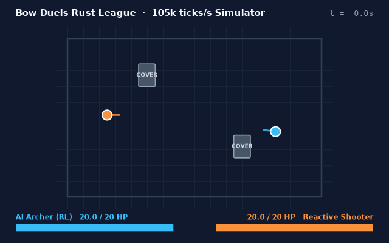
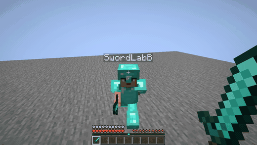
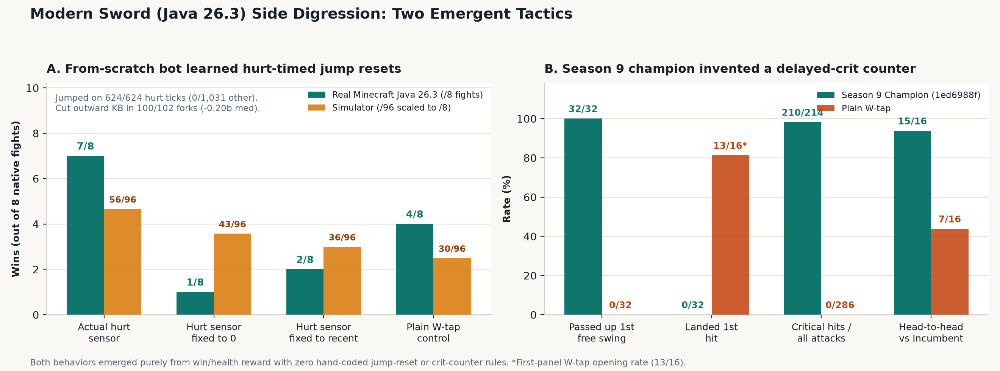
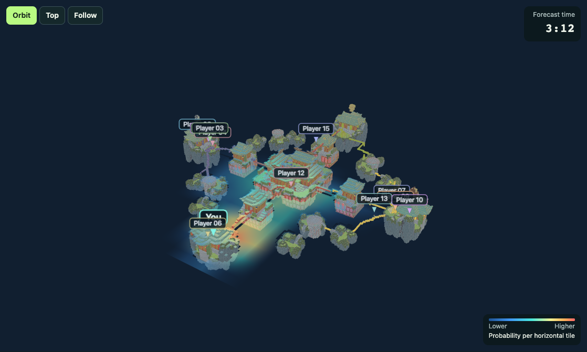
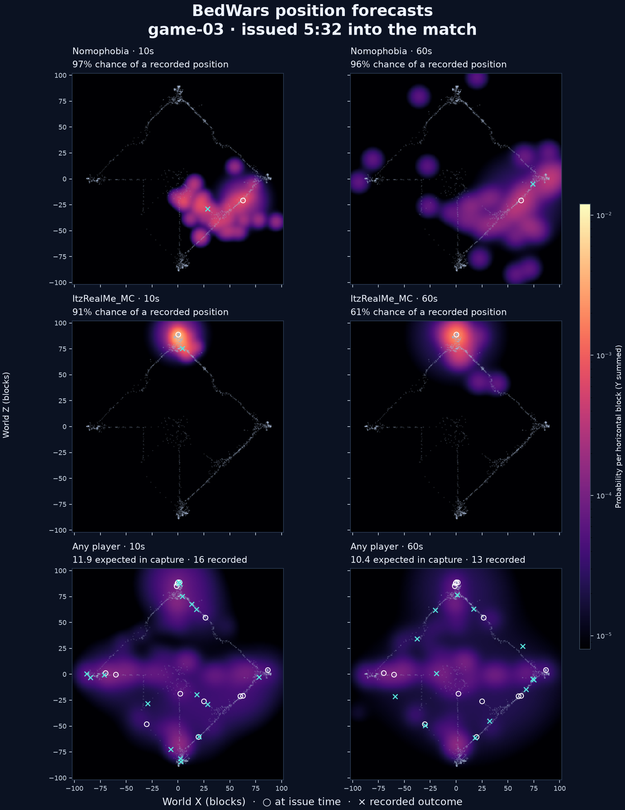
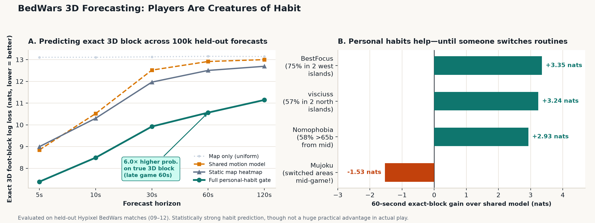

Side Explorations: Bow Duels, Modern Sword & BedWars Heatmaps
Alongside 1.8.9 Sumo and Neural Bow Aim, I wandered into three side projects all driven by the same curiosity about opponent prediction: reading strafe patterns in 1v1 bow duels, seeing if modern cooldown-based sword combat produces clearer predictive spacing, and testing how predictable BedWars players are over a whole match.
1. Bow Duels Self-Play League (AVX2 Rust Simulator)
In 1v1 Bow Duels (bows, cover pillars, knockback, and ender pearls), shooting at a purely random strafer is tough—but real opponents rarely randomize cleanly. I wanted to see what happens when two neural archers evolve against each other with cover and ender pearls.
To train fast, I wrote a batched AVX2 Rust physics and raycasting engine (geometry.rs) that hits 105,000 arena ticks/second (12× faster than NumPy) while matching real Forge 1.8.9 movement within 4.2×10⁻⁶ blocks and exact arrow hit/miss outcomes. Every generation spawns specialized counter-agents to exploit the current champion's strafe and cover habits, then trains new generalists (MLP, GRU, and future-position forecasting GRUs) against the growing threat pool.


Honest status: All league win rates so far are in the verified Rust simulator (e.g., ablating strategy noise in the GRU drops win rates against strong peers into long stalemate draws, while crushing predictable `strafe` and `reactive` scripts 28–2 and 27–3). Full-duel native Forge transfer hasn't been evaluated yet. Bow Duels architecture & benchmarks →
2. Modern Minecraft (Java 26.3) Sword League
Full disclosure: modern cooldown-based sword PvP was a digression—I don't play modern Minecraft much and didn't study these results nearly as deeply as 1.8.9 Sumo. I spun up a fast JVM flat-court simulator and a headless Linux-VM promotion ladder mainly because I thought attack cooldowns might create cleaner, more legible predictive dynamics.
Even without much hand-holding, self-play trained purely on win/health reward rediscovered two genuinely cool techniques verified in real Minecraft Java 26.3:
- Emergent hurt-timed jump-resetting: A policy trained from scratch learned to jump on 624/624 ticks with an incoming hurt animation (and 0/1,031 other ticks). One-tick counterfactual forks showed jumping cut outward knockback by a median 0.20 blocks in 100/102 native cases; disabling its hurt sensor dropped its real-Java wins against the league opponent from 7/8 → 1/8.
- Deliberate delayed-crit counter: The Season 9 promoted champion (
1ed6988f) intentionally passed up the first free charged swing in all 32/32 native Java fights, absorbed the opening hit, and replied 8–14 ticks later with a falling critical hit—landing 210 criticals out of 214 attacks (vs. 0/286 for W-tap) and beating the previous champion 15–1 head-to-head!


3. BedWars 3D Player Location Forecasting
This started from a fun curiosity: given only what your client sees during a Hypixel BedWars match, how well can a model forecast where every player on the map will be 5, 10, 30, 60, or 120 seconds from now?
The model combines global map priors with an online per-player memory built live during the match (recent trails, favorite islands, repeated bridge routes, and inferred home base). On 100,075 held-out forecasts across unseen games, adapting to each player's personal habits assigns 6.0× higher geometric mean probability to the exact 3D foot-block 60 seconds later compared to a static map heatmap.



Mujoku), personal memory briefly lags behind.
Even though the statistical lift is huge and the 3D live overlay / heatmap viewer looks really cool, in actual gameplay I didn't find it very useful or much of an advantage—you already have a decent mental model of coarse map flow, and past 30 seconds uncertainty spreads out across whole islands anyway. Fun ML & visualization experiment, not a secret weapon.